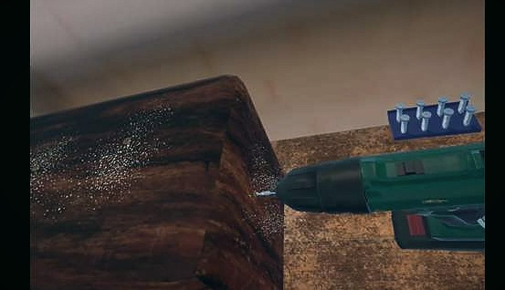
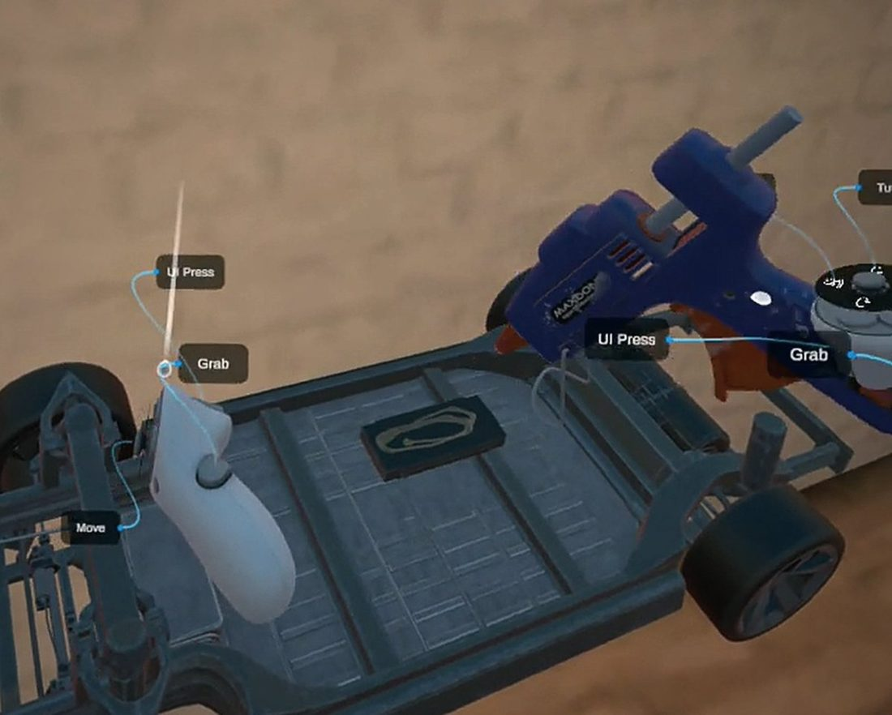
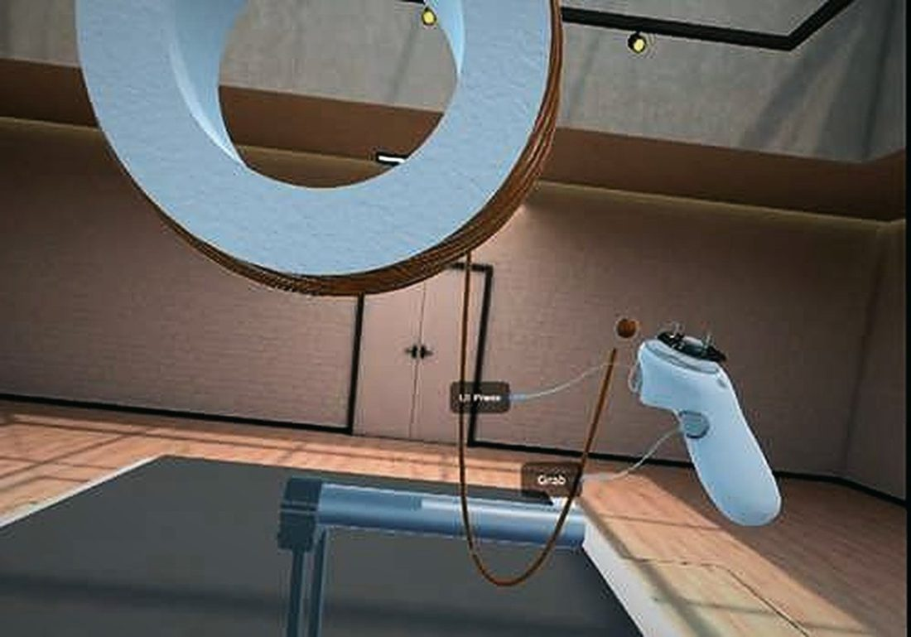
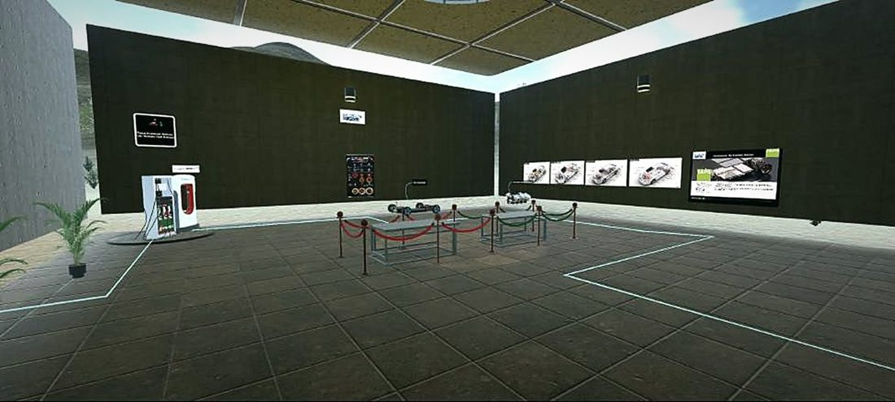
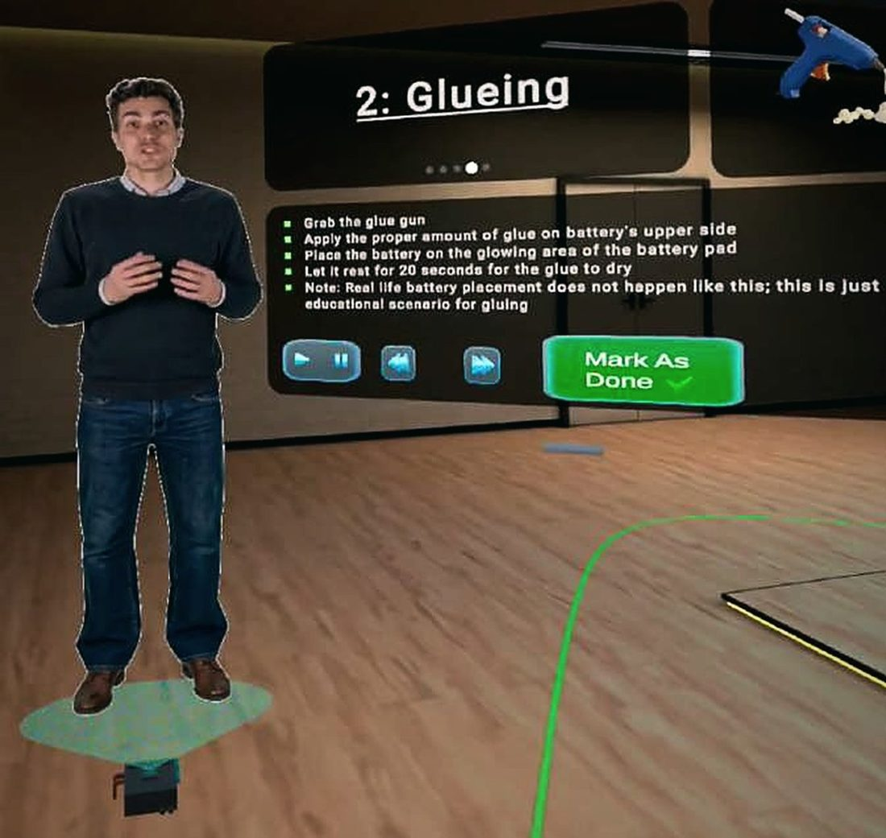

Blocks with weight
A digital build that wobbles, resists and only stands if it would stand in real life. Gravity becomes a friendly teacher.
I'm Himanshu, an engineer who invents virtual experiences where objects behave like real ones. A screw turns only when you twist it. Wire coils because your hand circles. Glue dries while you wait.
Every invention page has a little toy. Go on, break it.

push harder

wire that coils itselfIn most virtual worlds, objects snap into place. It looks finished, and you learn nothing, because your hands never did anything. I wanted the feeling of doing to be the lesson.
I built a virtual learning world and compared it with learning the same content from a document, five people per group. Small, so it's an indication, not proof. It still changed how I design.

the learning world
a guide that waits for youIt's the fastest way I know to feel an idea before it exists.
A play idea can be picked up, twisted and gotten wrong in a headset within days, long before anything is moulded.
With mixed reality and hand tracking, real objects on a table and a digital world can share one space.
Watch what makes someone smile or give up, change it overnight, try again the next morning.
Early thoughts, drawn quickly, meant to be argued with.
A digital build that wobbles, resists and only stands if it would stand in real life. Gravity becomes a friendly teacher.
Creations that "set" like my glue, so patience and planning become part of the game instead of a loading bar.
A playful guide that appears only when a child is really stuck, gives one hint, and leaves the discovery to them.
M.Sc. FAU Erlangen-Nürnberg, B.E. Mechanical Engineering. Currently building VR training worlds as a working student at qfmd Dresden.